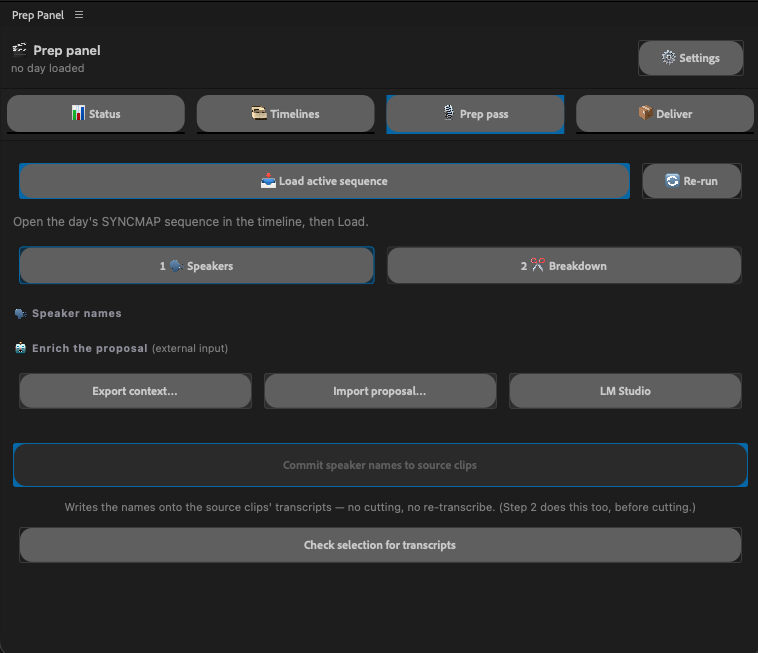
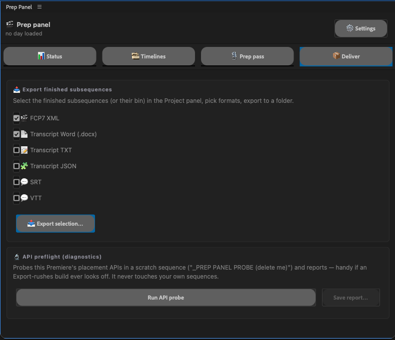
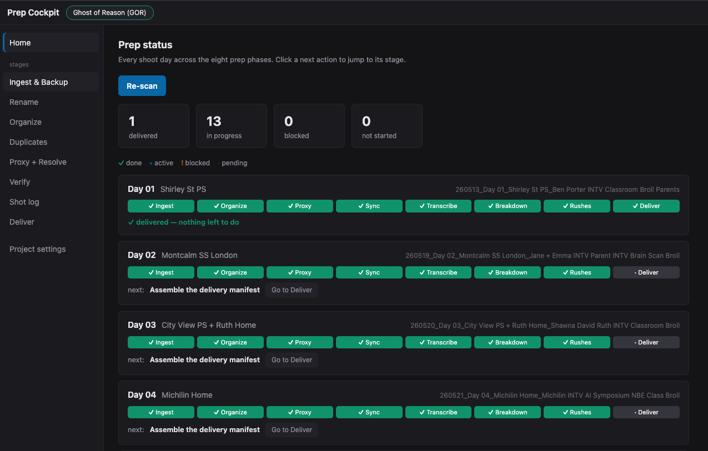
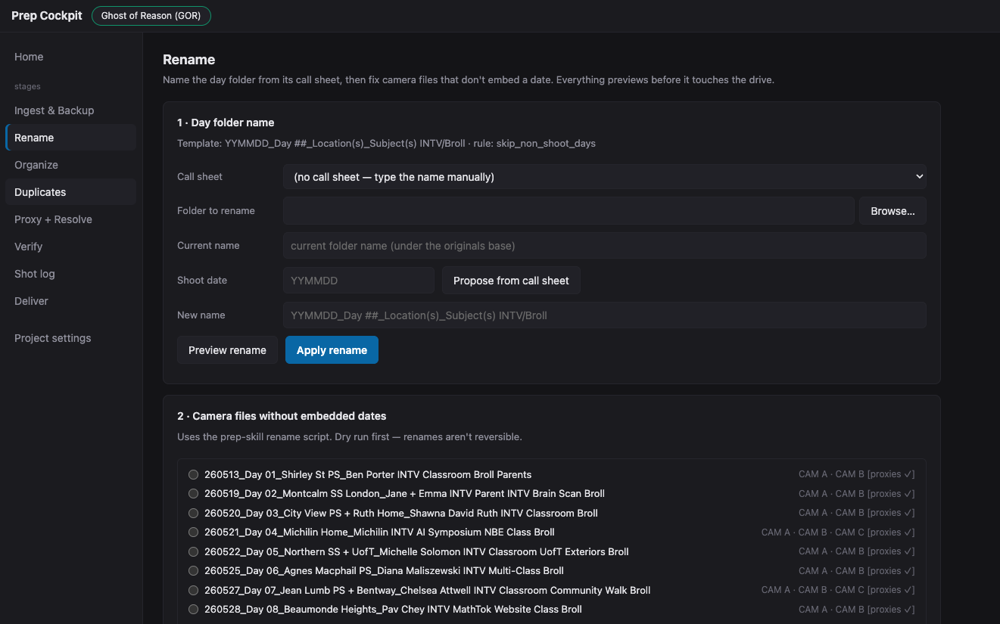
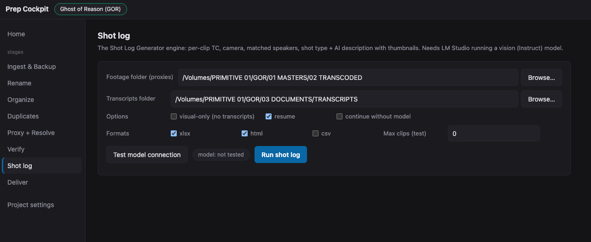
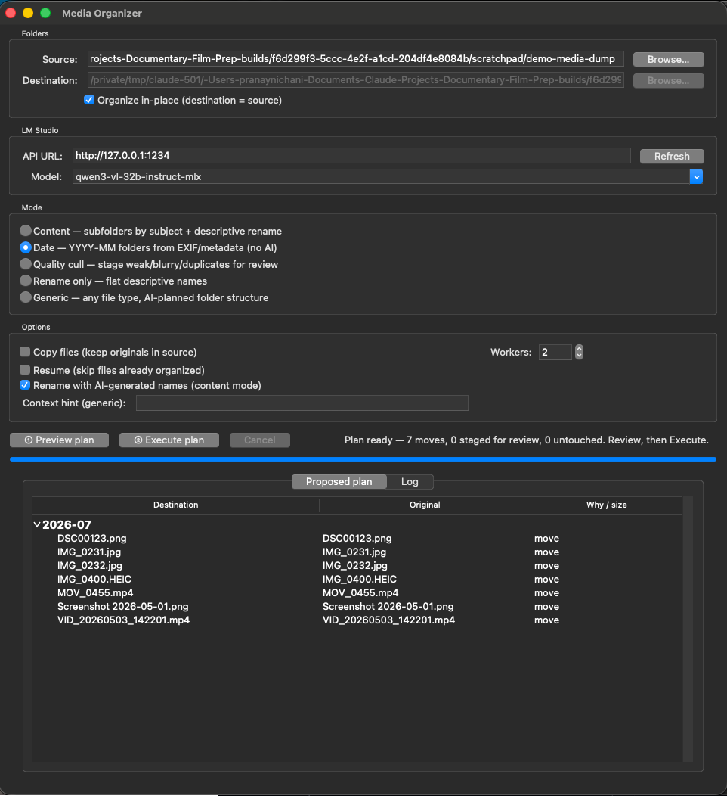

Where AI actually belongs in documentary post-production
Over the last year I rebuilt the pipeline that takes a documentary from the shoot to the edit suite — with AI in the loop at every phase, and a human hand on every decision that matters. This is the before and after.
PRANAY NICHANI · TORONTO · 14 MIN READ
01
The invisible half of post
Every documentary has two edits. There's the one people talk about — the year in a dark room finding the film. And there's the one nobody talks about: the weeks of work that make that room possible. Ingesting and backing up the footage. Organizing it so nothing gets lost. Transcoding proxies. Syncing multicam days. Transcribing interviews and figuring out who's speaking. Breaking each shoot day into scenes. Getting transcripts and rushes into the director's hands fast enough to shape the next shoot.
That second edit is post-production prep, and it's where I've spent a large part of fifteen years — on features, series, and shorts, including an Academy Award–nominated feature that ran to 88 terabytes of footage across 156 shoot days. Prep is unglamorous, deeply procedural, and completely unforgiving: a mislabeled clip or a broken sync surfaces months later, mid-edit, at the worst possible moment.
It's also, it turns out, an almost perfect testing ground for AI — because so much of it is mechanical work wrapped around a small number of judgment calls. Over the past year I've rebuilt my entire prep workflow with AI in the loop: some of it purpose-built tooling that lives inside Premiere Pro, some of it an agent that reads call sheets and transcripts and folder trees, some of it a local web app that ties the whole pipeline together.
This post is the before and after. Not a think-piece about whether AI will replace editors — it won't, and I'll show you exactly why — but a working account of where automation genuinely helps in a documentary post workflow, where it doesn't, and what I learned building it.
02
The rule: AI drafts, a human decides
Before any tooling, one rule — the one every tool I built is designed around:
AI drafts. A human decides.
Timecode discipline, sync integrity, where a scene begins and ends, and what ships to the director are human-owned. Full stop. AI's job is to remove the mechanical load around those decisions, not to make them. When a tool proposes a folder rename, it shows me the plan before touching the drive. When it proposes a scene breakdown, I adjust the boundaries before anything gets cut. When anything is ambiguous — two clips sharing a filename, a speaker it can't confidently identify — the tools are built to stop and ask, never to guess.
That sounds like a philosophical stance. It's actually an engineering one. Documentary footage is irreplaceable; the entire pipeline exists to protect it. Any automation that guesses is a liability, and any automation that drafts-then-confirms is leverage. Everything below follows from that distinction.
03
The pipeline, end to end
Here's the shape of the work, from the moment a field drive arrives to the moment an editor can start cutting. It reads like a timeline because it is one — each phase preserves something the next one depends on.
The prep pipelineSHOOT → EDITOR CAN CUT
PHASE 0Jam timecode
On set, before anything is shot
PHASE 1Ingest & back up
Originals verified, then read-only
PHASE 2Organize & QC
Day folders, naming, no duplicates
PHASE 3Proxies
Light editing copies, conform-ready
PHASE 4Sync the day
One multicam map per shoot day
PHASE 5Transcripts & speakers
Real names on real people
PHASE 6Scene breakdown
The day, cut into meaningful units
PHASE 7Rushes & delivery
Transcripts + review cuts, out the door
PHASE 8Archival
Parallel: IDs, rights, provenance
HAND-OFFEditor opens cold
Drive guide, consistency check
Every phase used to be manual. Today, every phase can have an AI layer — but the layer looks different in each one, and the differences are the interesting part.
04
Timecode is what makes AI possible
Here is something I have not heard anyone mention about AI in film workflows: the most important enabler isn't a model - Claude, ChatGPT, Gemini or whatever the latest buzz word might be.
It's a properly jammed timecode.
On a well-run documentary shoot, every camera and the external audio recorder are jammed to a common timecode before anything is shot. That one act of on-set discipline is the backbone of everything downstream: it's what lets a multicam day sync instantly and exactly, and it's what keeps an unbroken chain from a paragraph in a transcript, to a burned-in timecode on a review file, to the precise frame on the editor's timeline. Type a timecode anywhere in that chain and you land on the same moment everywhere.
It's also what makes almost every AI step in my pipeline work. Automated sync assembly, matching clips to transcripts, generating scene breakdowns with frame-accurate in and out points, building shot logs where every entry carries its real timecode — all of it rides on that chain. A missed jam on set can't be fixed by any tool; it just downgrades a whole day from "instant and exact" to "slow and approximate."
I find that genuinely reassuring. The oldest, most manual craft discipline in the pipeline turned out to be the foundation the newest technology stands on. The machines inherited it.
05
Before and after, phase by phase
What follows is the honest ledger: what each phase looked like done entirely by hand, and what it looks like now with AI in the loop. A filled marker means it's in daily use on real productions; a hollow one means it's built or specced but still earning trust.
Manual vs. AI-enabledSAME PIPELINE · TWO WAYS OF RUNNING IT
Phase
By hand
With AI in the loop
0 · TIMECODE
Spot-check the first clips of each camera and the sound recorder against each other, by eye, hoping the jam held.
An agent reads the embedded timecode of every source and flags a missed or drifted jam in one report — before hours are sunk into a sync that won't hold.
1 · INGEST + BACKUP
Copy the field drive to the originals drive; trust the checksum manifest; verify by eye.
An independent verification pass compares source and destination — counts, sizes, manifests — a second set of eyes on the one step that's unrecoverable if it goes wrong.
2 · ORGANIZE + QC
Build dated day folders, rename every camera file that doesn't embed a date, and hunt duplicate filenames across the whole tree by hand.
An agent reads the call sheets and proposes the day-folder names, renames non-conforming camera files (always dry-run first), and a scripted pass hard-stops on any duplicate filename.
3 · PROXIES
Mirror the folder structure for proxies, set up the transcode in DaVinci Resolve day by day, copy sound across, count files.
The proxy folder tree is scaffolded automatically, and the Resolve setup — bins, imports, timelines, render queue — is generated as ready-to-run scripts, per day, camera package auto-detected.
4 · SYNC
Multicam-sync each day in Premiere; fall back to waveform or manual slate-matching when timecode disagrees.
For clean-timecode days, a tool builds the frame-exact multicam sync map directly into the project — a day's sync becomes effectively instant. Off-timecode days stay human.
5 · SPEAKERS
Premiere labels everyone "Speaker 1, Speaker 2" — and renumbers them per clip. Relabel real names clip by clip, all day.
AI identifies each voice from the call sheet, director's notes, and the transcript's own tells ("Speaker 2: My name is…"), then applies real names to the source clips so they carry into every timeline.
6 · BREAKDOWN
Read the transcript against the call sheet and cut the day into scene subsequences one at a time — judgment call after judgment call.
AI drafts the full breakdown — in/out timecodes, scene names, nothing dropped — from the transcript and call sheet. I adjust boundaries and names, then cut. The judgment stays mine; the first pass is just faster.
7 · DELIVERY
Export per-scene and full-day transcripts, assemble review timelines camera by camera, strip dead video, QC every file by hand.
Batch export handles transcripts and exchange formats in one pass; a generator turns the day's sync map into a gap-free, split-screen review timeline automatically. QC remains a human ritual.
8 · ARCHIVAL
Tag each archive piece with a project ID and reconcile it against the researcher's rights spreadsheet manually.
An agent reconciles what's on disk against the tracking sheet and flags any piece missing from either side — exactly the gap that becomes a licensing problem at the finish line.
HAND-OFF
Write the drive-and-project guide from memory; build shot logs, when requested, by scrubbing every clip.
A shot log — clip, timecode, camera, speakers, shot type, a visual description — is generated by a local vision model running on my own machine. The hand-off guide is drafted from the actual state of the drive.
IN DAILY USE ON REAL PRODUCTIONSBUILT OR SPECCED, STILL EARNING TRUST
Two things stand out in that table. First, the AI column never says "and then it delivers to the director" — every row ends at a human checkpoint. Second, the phases where AI is most mature are the most mechanical ones: naming, scaffolding, sync assembly, batch export. The phases that stay stubbornly human — QC, scene judgment, what ships — are exactly the ones you'd want to stay human.
06
A short tour of what I built
The tooling settled into two forms. The first is purpose-built tools that live inside the edit — panels inside Premiere Pro that do the in-project work: syncing, speaker naming, breakdowns, batch export. The second is an agent and a local web app that handle everything outside the edit: ingest verification, renaming, organizing, proxy prep, shot logs, delivery. Everything runs locally; footage never leaves my machines.
Inside Premiere: one panel, one pass
What used to be five separate steps — sync the day, transcribe, name speakers, break down scenes, export — now runs as a guided pass inside a single panel. It builds the day's sync map at real timecode, proposes speaker names and scene boundaries for me to adjust, commits the names onto the source clips, cuts the subsequences natively, and exports transcripts and review timelines — without ever round-tripping the project through fragile exchange formats.


FIG 01 — THE IN-PREMIERE PANEL. LEFT: THE PREP PASS (SPEAKERS → BREAKDOWN). RIGHT: BATCH DELIVERY OF TRANSCRIPTS AND TIMELINES.
Outside Premiere: a cockpit for the whole pipeline
Everything that happens on the drive rather than in the project runs through a local web app — one place that walks a shoot day through ingest, rename, organize, duplicate checks, proxies, verification, shot logs, and delivery, with a human confirmation gate at every stage. Its home screen answers the question every production manager asks and every assistant editor dreads reconstructing: where is every shoot day, right now?

FIG 02 — THE HOME SCREEN: EVERY SHOOT DAY, EVERY PHASE, DONE / ACTIVE / BLOCKED — READ STRAIGHT FROM THE DRIVE AND THE PROJECT FILE.
The stages themselves are deliberately boring, in the best way. The rename stage reads the call sheet and proposes the folder name; nothing touches the drive until I've seen the preview. The shot-log stage points a locally-run vision model at the day's footage and produces a searchable log — every clip with its timecode, camera, matched speakers, shot type, and a description of what's in frame.


FIG 03 — TWO STAGES: CALL-SHEET-DRIVEN RENAMING (EVERYTHING PREVIEWS FIRST) AND SHOT LOGS FROM A LOCAL VISION MODEL.
The loose-media problem
Documentaries accumulate media that arrives from nowhere in particular — a subject's phone videos, scans, stills, screen recordings. A separate organizer takes those dumps and proposes a structure: by date from embedded metadata, or by content using the same local model. It plans, I review the plan, then it executes. It never deletes anything on its own; anything questionable is staged for my review instead.

FIG 04 — THE MEDIA ORGANIZER: PLAN → REVIEW → EXECUTE. THE "PROPOSED PLAN" TABLE IS THE WHOLE SAFETY MODEL IN ONE SCREEN.
None of this replaced my seat at the desk. What it replaced is the part of the job that was always secretly data entry — and it gave the time back to the parts that were always secretly editorial: reading the footage, catching problems, making the day make sense.
07
The dividing line
If you take one diagram from this post, take this one. It's the actual division of labour in my pipeline today — not aspirational, operational.
Division of labourAS RUN, TODAY
THE HUMAN OWNS
—Whether the timecode can be trusted — and what to do when it can't
—Where a scene begins and ends
—Signing off on who each voice belongs to
—Quality control on everything that ships to the director
—Every ambiguity: duplicate names, unclear matches, missing media
AI CARRIES
→Naming and renaming at scale, from call sheets — previewed first
→Folder scaffolding, proxy prep, and generated Resolve setups
→Frame-exact sync assembly on clean-timecode days
→First-pass speaker identification and scene breakdowns
Notice what's on the left: nothing on that list is a chore. Every item is a judgment call with consequences. And notice what's on the right: nothing there is a judgment call. That's not a compromise I settled for — it's the design.
08
What building it taught me
I built these tools myself, with AI pair-programming the implementation while I supplied the workflow knowledge — which means I also collected a year of lessons about what it actually takes to automate a craft. Four of them are worth passing on.
Preview before anything destructive. Always.
Every tool that touches files shows its full plan before executing, and anything resembling a deletion goes to a staging folder for review — never to the trash. This isn't one clever line of code; it's a posture applied identically across every tool, in every language, on every host. It's the single biggest reason I trust the toolkit against real footage and not just test fixtures.
Ambiguity is a hard stop, not a best guess.
Two clips sharing a filename halts the entire pipeline until a human resolves it — even though a heuristic guess would probably be right most of the time. "Probably right most of the time" is a fine standard for a photo library. It's a catastrophic standard for irreplaceable documentary footage, where a silently overwritten camera file is a moment of someone's life that doesn't exist anymore.
Real footage breaks every synthetic assumption.
The hardest bugs never appeared in testing — they appeared the moment real production media entered the loop. Test clips had one audio channel; real location sound runs three or four, and camera scratch audio runs eight, and an automation that placed audio correctly in tests silently overwrote neighbouring channels in production. If you're evaluating any AI tool for post, ask one question first: has it been run against real rushes? The gap between demo and dailies is where these tools live or die.
Be honest about maturity.
Every AI step in my written workflow carries a tag, and I'd encourage anyone building or buying post tooling to demand the same candour:
Proven
Used successfully on real productions. Trusted.
Prototype
Built and working, not yet generalized across shows.
Planned
Fully specced, ready to build. Not yet real.
Idea
A proposal. Flagged so nobody mistakes it for a tool.
Most of what you'll read about AI in filmmaking collapses those four categories into one breathless tense. Keeping them separate is what lets a production actually plan around the technology instead of being burned by it.
Knowing the tools doesn't make you less of a storyteller. Knowing exactly what your tools can do is how the story gets told.
I've built my career on both sides of that line — cutting films, and building the workflows that let films get cut. What this year of building confirmed is that they were never two disciplines. The assistant editor who understands why the timecode chain matters is precisely the person who can teach a machine to protect it. The craft and the machinery are the same discipline; AI just raised the stakes on knowing both.
If you're a director or producer with a documentary heading into post — or mid-shoot and already drowning in footage — this pipeline is how I work, and it's available. And if you're an assistant editor building your own version of this: start with the timecode, make every tool show its plan, and never let anything guess.